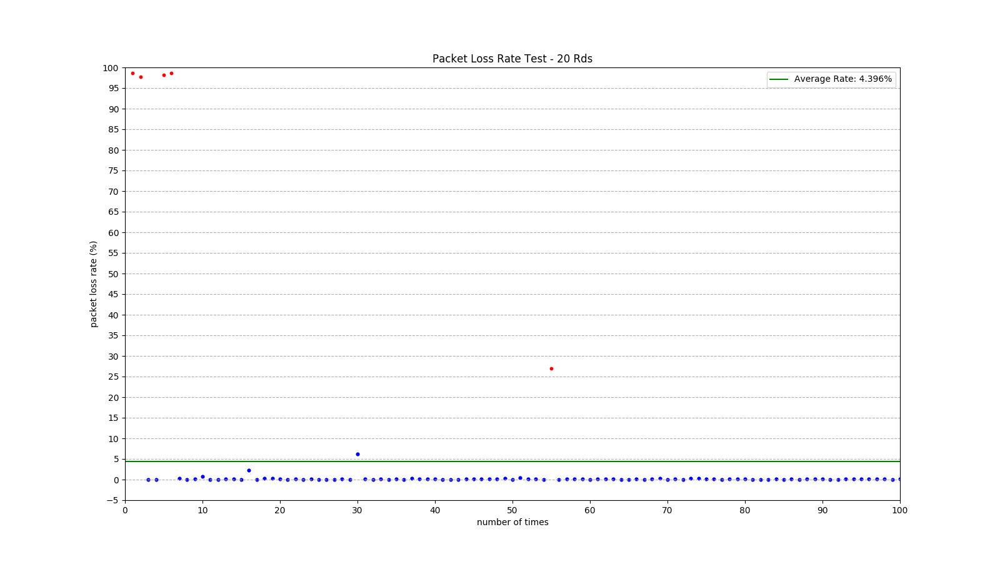
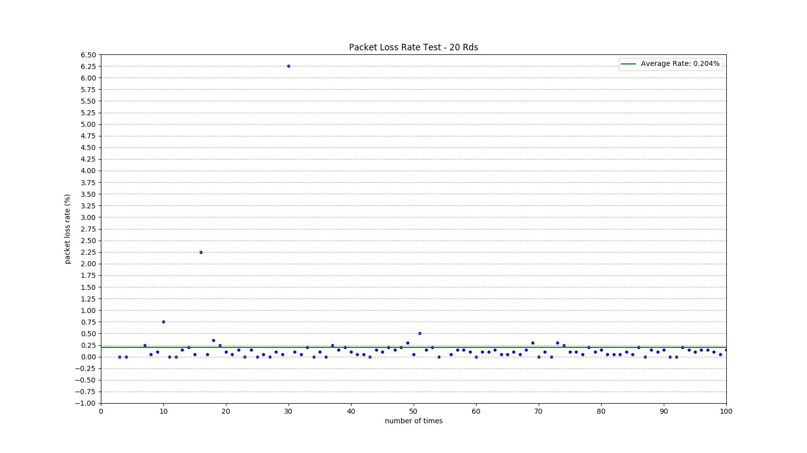
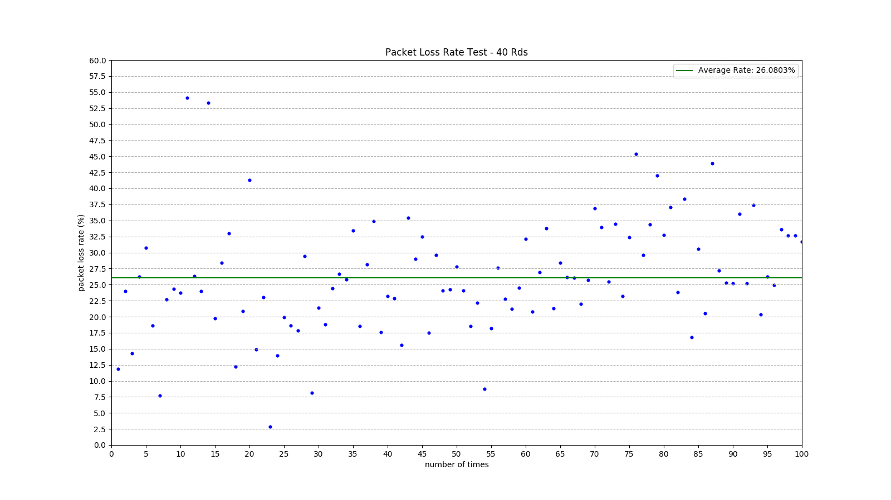
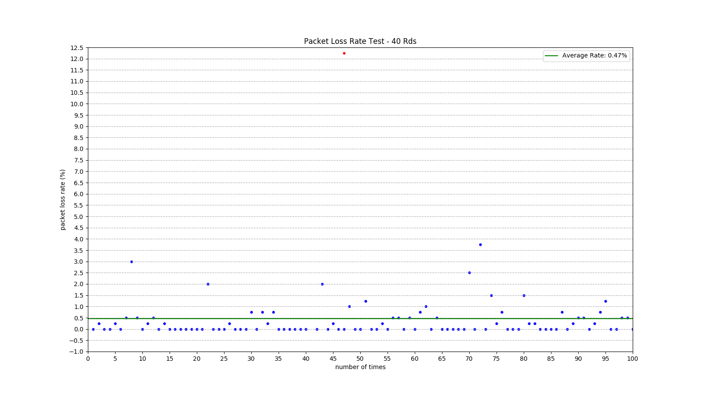

First Test - 20 Rds
Client
测试次数: 100
Client数 / 次: 20
消息数 / 次: 2 000
消息量 / 次: 2 000 000 B
Server
turnserver版本: 3.2.3.95
Allocate超时时间: 60 s
Relay最大线程: 500
Result
(请在新标签页查看大图)

平均丢包率 4.396%
由于某些原因(可能是网络)，统计数据中存在杂点，去除杂点再次统计
(请在新标签页查看大图)

平均丢包率 0.204%
结果可以接受
Second Test - 40 Rds
Client
测试次数: 100
Client数 / 次: 40
消息数 / 次: 2 000
消息量 / 次: 2 000 000 B
Server
turnserver版本: 3.2.3.95
Allocate超时时间: 60 s
Relay最大线程: 500
Result

平均丢包率 26.0803%
40路丢包率与之前20路相比偏差较大
在排查可能存在的问题（网络？测试程序？服务端带宽设置？）
降低消息数据长度后
